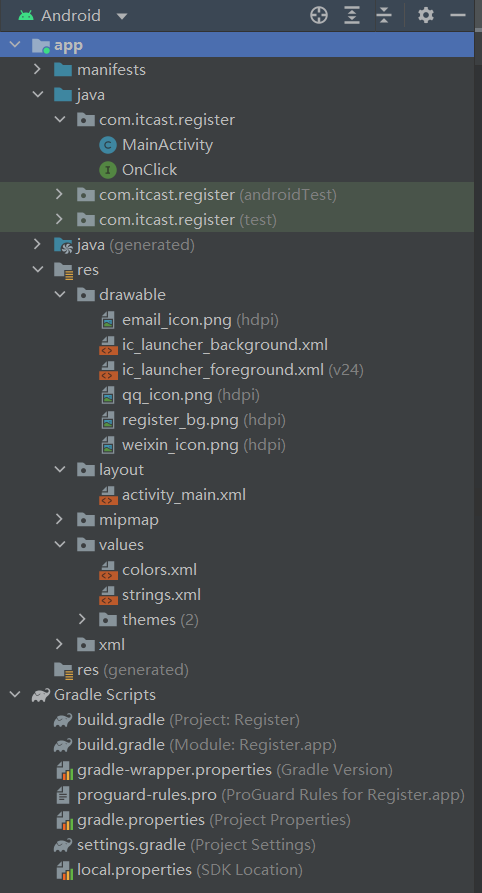
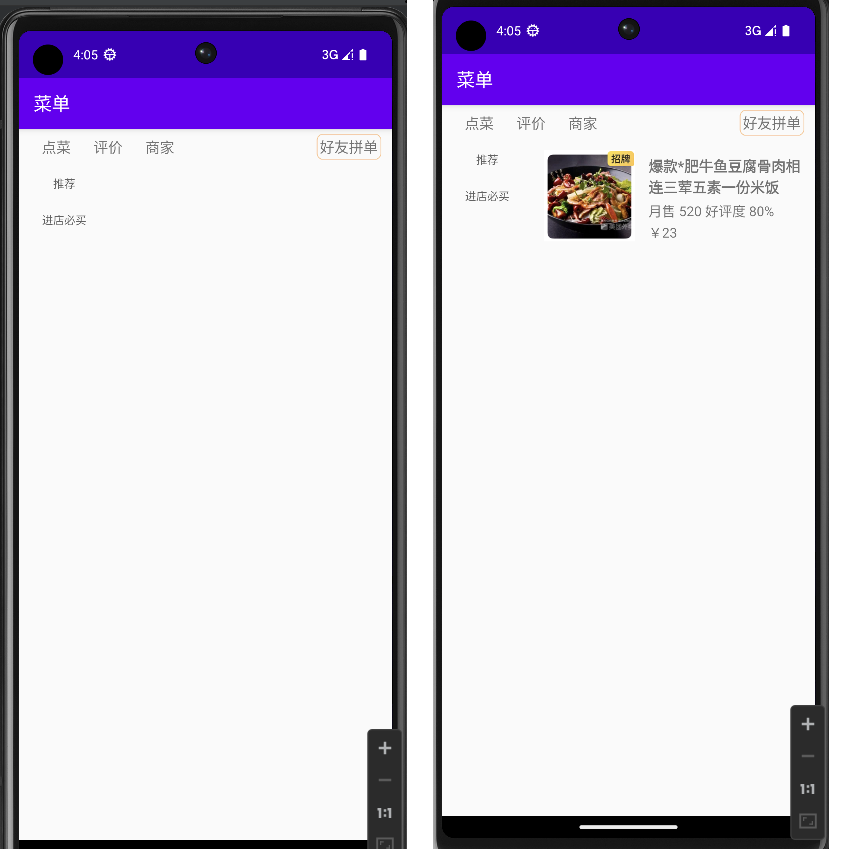
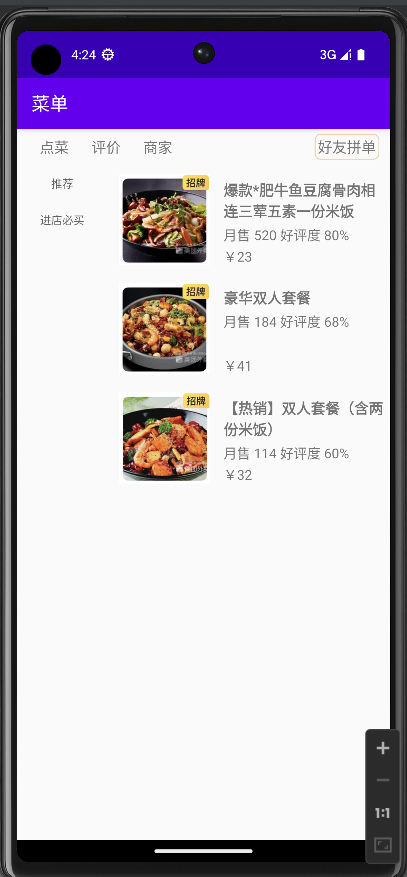

此文章属于原创，如需使用请标明出处！
Android开发学习
记录我在学习开发 Android 时遇到的问题和解决方法，以及对一些小知识点进行汇总。
Android Studio 为程序构建了基本结构：
- manifests：整个程序的配置文件；
- java：存放程序的代码文件；
- res：存放程序的资源文件；
- build.gradle：程序或模块的 gradle 构建脚本等；
布局和控件
在 Android Studio 开发程序，所有的界面布局都可以在 layout 目录下的XML布局文件中定义。
Android 常见界面布局：
- 线性布局 LinearLayout；
- 相对布局 RelativeLayout；
- 表格布局 TableLayout；
- 帧布局 FrameLayout；
Android 常见界面控件：
- TextView；
- EditText；
- Button；
- ImageView；
- RadioButton（单选）；
- CheckBox（多选）；
- Toast（轻量信息提醒）；
- ListView（列表形式展示数据内容）；
- RecyclerView（对 ListView 的扩展）；
居中
控件居中
LinearLayout
（1）android:layout_gravity="center_horizontal" 表示该布局在父布局里水平居中，此时其父布局必须拥有 android:orientation="vertical" 属性；
（2）android:layout_gravity="center_vertical" 表示该布局在父布局里垂直居中，此时其父布局必须应设置成 android:orientation="horizontal" 属性（默认为该属性）；
线性布局中不同时存在水平居中和垂直居中。
RelativeLayout
属性值为 true 或 false；
（1）android:layout_centerHrizontal 控件在父布局中 水平居中；
（2）android:layout_centerVertical 控件在父布局中 垂直居中；
（3）android:layout_centerInparent 控件相对于父元素完全居中；
文本居中
android:gravitu="center" 文字在控件的中心；
TextView 组合图片
当你想把文本和图片组合在一起显示，而且不想繁杂的设置图片位置，可以使用 TextView 的 android:drawableXxx="@drawable/xxx"，便捷的在文本标签的四周添加一张图片；
例如：
1 | <TextView |
设置 Button 点击事件
（1）在布局文件中指定 onClick 属性的值；
1 | <Button |
在 Activity 中定义专门的方法实现 Button 控件的点击事件；
（2）
使用匿名内部类；
1 | btn.setOnClickListener(new View.OnClickListener() { |
向 setOnClickListener() 方法传递一个匿名内部类。
（3）使用 Activity 实现 OnClickListener 接口
1 | public class Activity extends AppCompatActivity implements View.OnClickListener{ |
如果界面上的 Button 控件较多，建议使用第三种方式实现控件点击事件。
RecyclerView
内容不可见
布局 Layout XML 文件内容如下：
1 |
|
实际上，不管是使用 ListView 还是 RecyclerView，你都会发现列表视图的内容没有正确显示。
经过测试，发现这是布局的问题，而不是 Java 代码的问题：
我在 RecyclerView 的外面套了一层 LinearLayout 作为父容器，而 LinearLayout 默认方向是 Horizontal（横向），会与 RecyclerView 的垂直布局产生冲突，从而导致 RecyclerView 的内容无法显示。
因此，解决办法就是在 LinearLayout 的属性中设置方向为垂直方向：
1 | android:orientation="vertical" |
当然你也可以选择不在 RecyclerView 外面套一层 LinearLayout。
到目前为止，你已经可以成功解决 ListView 的显示问题，而 RecyclerView 还需要进一步的设置：为 RecyclerView 设置一个 LayoutManager：
例如：
1 | rv_list.setAdapter(rightAdapter); |
最后，你就可以解决 RecyclerView 内容不显示的问题了！
Item 长宽错误
注意在上面的项目中，实际效果应该是如下图所示：
之所以会出现 Item 高度过长的问题，是应为我在 Item 布局文件中，将 RelativeLayout 布局的 layout_width 和 layout_height 设置为了 match_parent。
因此我们要注意 Item 布局的特殊性，它作为列表中的一项，应该将高度设置为 wrap_content，以防出现 Item 的不正常显示。当然具体问题具体分析，不过一般情况都是这样的。
修改后的部分布局代码如下：
1 |
|
Activity
Android 中的四大组件分别是 Activity、Service、ContentProvider 和 BroadcastReceiver。其中，Activity 是一个负责与用户交互的组件。每个Android 应用程序中都会用 Activity 来显示界面以及处理界面上一些控件的事情。
数据回传
如果项目中的 appcompat 库是1.3.0或更高的版本，你会发现 startActivityForResult() 方法已经被放弃了，现在更建议使用 Activity Result API 来实现在两个 Activity 之间交换数据的功能。
注意：registerForActivityResult 只能在 onCreate() 中注册。onstart() 之后就不能注册了。
registerForActivityResult() 方法不要放在 setOnClickListener() 里面，要放在 onCreate 里。
例如：
1 | ActivityResultLauncher launcher = registerForActivityResult(new ActivityResultContracts.StartActivityForResult(), new ActivityResultCallback<ActivityResult>() { |
两个参数：
- 第一个参数，需要传入 ActivityResultContract，指返回数据的类型；
- 第二个参数，需要传入一个回调 ActivityResultCallback，数据返回时调用这个方法获取并处理数据；
返回值：它返回一个 ActivityResultLauncher 对象；
用法：调用 ActivityResultLauncher 的
launch()方法可以跳转到另一个 Activity 或者发起权限请求；
注意：使用 startActivityForResult() 方法，可以传入 requestCode 用于区分请求来源；而 Activity Result API 不存在这个参数，实际上也不需要这个 requestCode 参数；
2
private ActivityResultLauncher actionDialLauncher = registerForActivityResult(...);
2
3
4
5
6
7
8
Intent intent = Intent(Intent.ACTION_VIEW);
actionViewLauncher.launch(intent);
}
secondButton.setOnClickListener {
Intent intent = Intent(Intent.ACTION_DIAL);
actionDialLauncher.launch(intent);
}给每个需要数据回传的控件创建一个 ActivityResultLauncher 实例可以完美解决定位请求来源的问题，而且一切都更加简单和清晰。
添加 Fragment
Fragment（碎片）是一种嵌入在 Activity 中的 UI 片段，它可以用来描述 Activity 中的一部分布局（相当于控件容器）。
在 Activity 中添加 Fragment 有两种方法：
在布局文件中添加 Fragment
使用
<fragment></fragment>标签，必须指定其android:name属性，其属性值为 Fragment 类的路径全名称。示例如下：
1
2
3
4
5
6
7
8
9
10
11
12
13
14
15
16
17
18
19
20
21
22
23
24
25
26
27
28
29
30
31<fragment
android:id="@+id/right_frag"
android:name="com.itcast.menu.RightFragment"
android:layout_width="0dp"
android:layout_height="match_parent"
android:layout_weight="3" />
2. **在 Activity 中动态加载 Fragment**
在 Activity 运行时，可以将 Fragment 动态添加到 Activity 中，具体步骤如下：
（1）创建 Fragment 对象；
（2）获取 FragmentManager（Fragment 管理器）的实例；
（3）开启 FragmentTransaction（事务）；
（4）向 Acticity 的布局容器中添加 Fragment；
（5）通过 `commit()` 方法提交事务；
示例代码如下：
```java
public void switchData(List<FoodBean> list){
rightFragment = new RightFragment().getInstance(list); //创建 Fragment 对象
fragmentManager = getFragmentManager();
fragmentTransaction = fragmentManager.beginTransaction(); //开启事务
fragmentTransaction.replace(R.id.right_frag,rightFragment); //添加 Fragment
fragmentTransaction.commit(); //提交事务
}
注意：如果 Fragment 是静态无变化的，只需要在布局文件中添加标签和创建相应的 Fragment 类，就可以显示 Fragment。
如果你还需要与该 Fragment 进行通信或者控制该Fragment的行为，你可以在 Activity 中获取 Fragment 对象（确保布局加载完成），并对其进行操作（允许不进行操作）。虽然你可以不获取 Fragment，但可能会导致应用程序出现错误或不可预测的行为。
因此，在添加静态 Fragment 后，建议在 Activity 中获取 Fragment 对象，并在必要时与 Fragment 进行交互，以确保应用程序正常运行并提供正确的用户体验。
注意：添加动态 Fragment 时，虽然通过事务改变 Fragment，但是动态 Fragment 会需要有一个初始状态，即动态 Fragment 的
android:name属性是必须的。